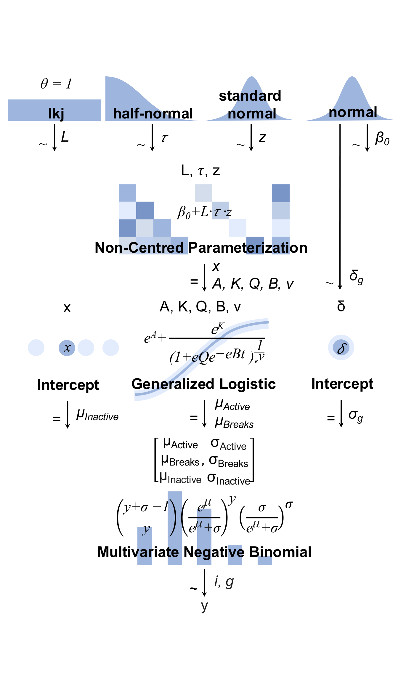
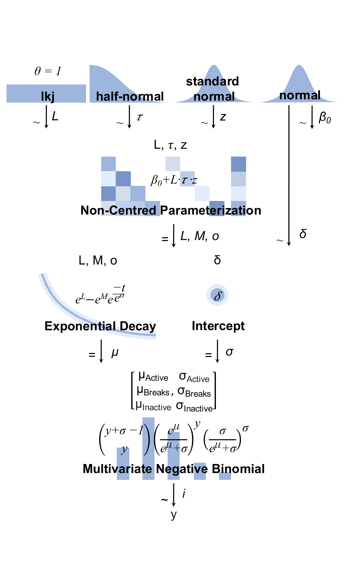
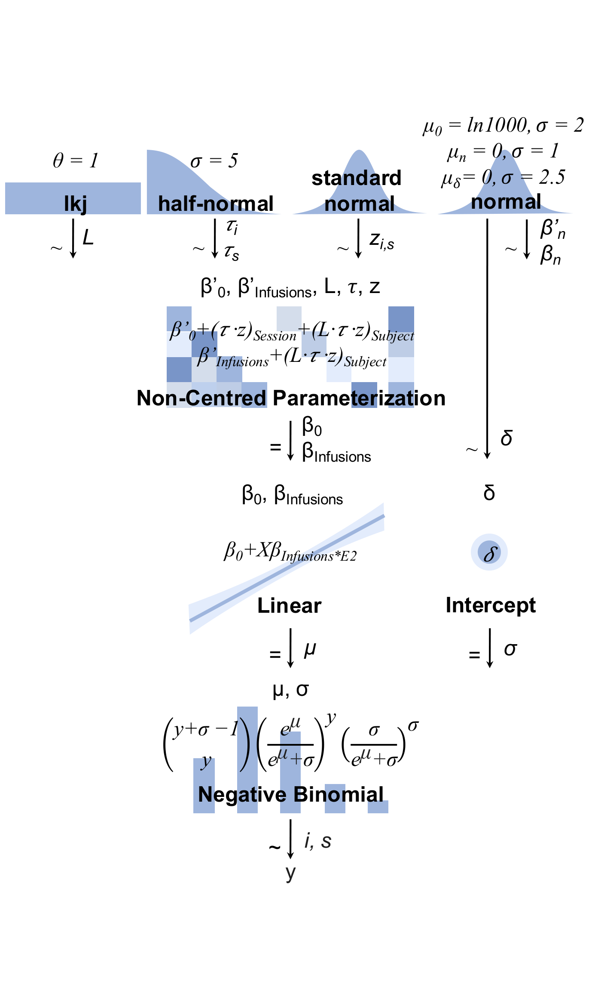
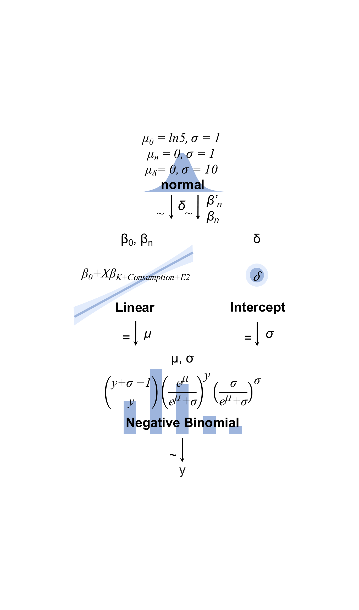
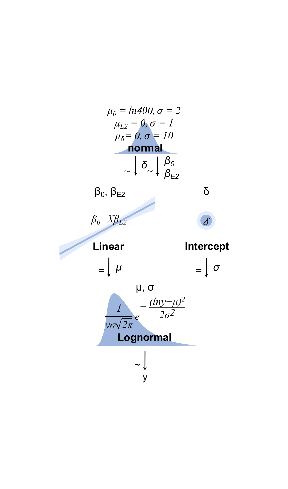
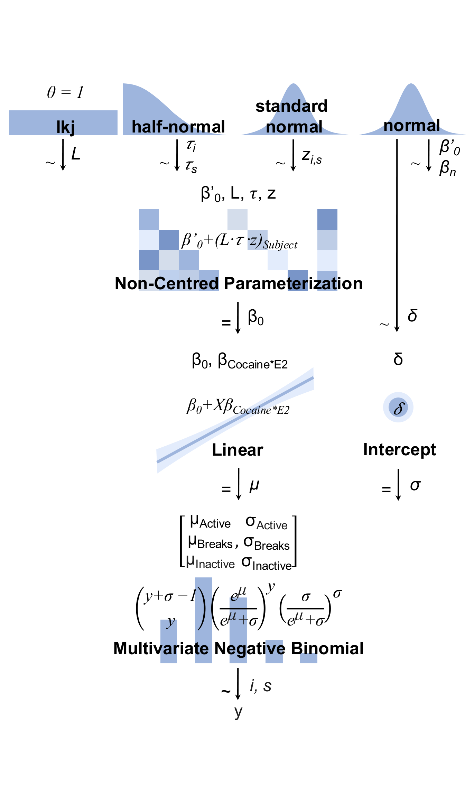
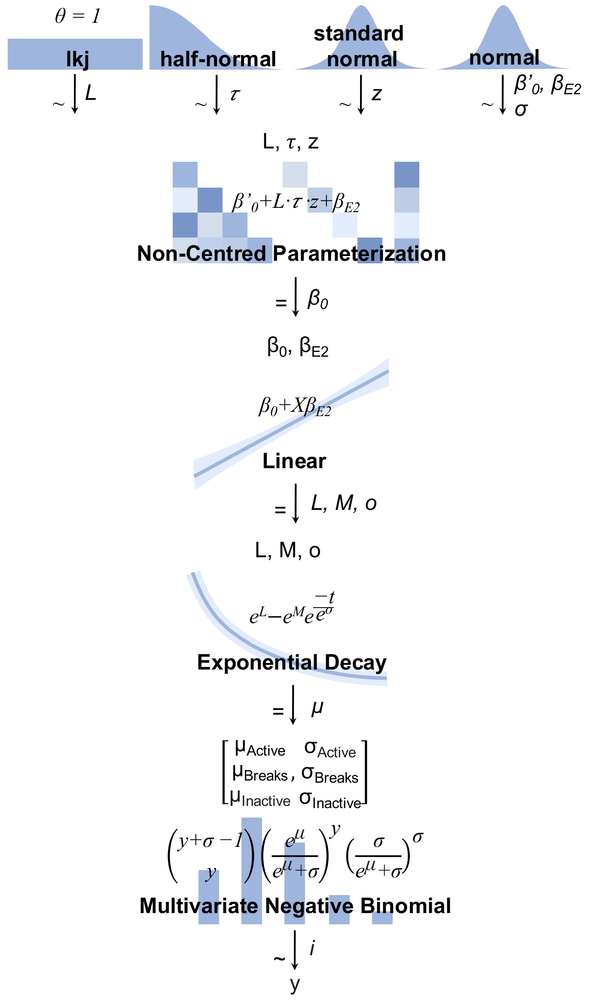
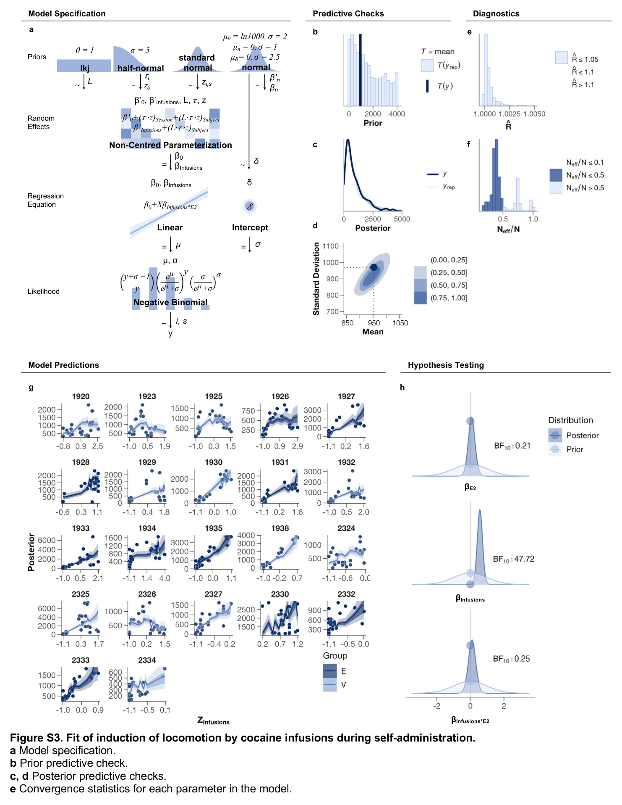
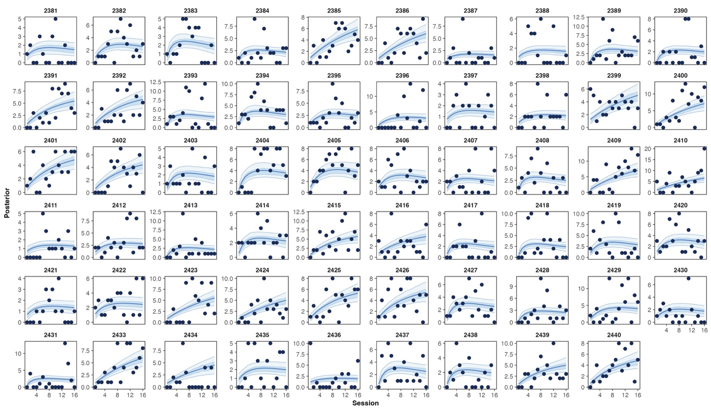

Documenting a model so someone can disagree with it
A model is not finished when it converges. Specification, priors, diagnostics, per-subject fit and the test belong in one artifact, and I build that artifact every time.
The set
Seven models
Do not argue for the practice. Anyone who can evaluate this page already knows what a generative diagram is and why you draw one. Explaining it spends words on a reader who was never going to be persuaded, and mildly patronises the one who was.
Say the one thing that is not obvious: you cannot produce this diagram from a brm() call. Drawing it requires knowing what brms generated on your behalf — the non-centred reparameterisation, the Cholesky factor, where each prior actually lands. That is a claim about comprehension rather than usage, and it is yours.
Then the range: three likelihood families, three link structures, priors annotated on the arrows with real numbers. Let the grid do the rest.







The artifact
What a complete audit page holds
Name what is on the page, briefly — the panels are labelled in the figure and do not need narrating. Specification, prior predictive, diagnostics, per-subject predictions, hypothesis test. One page per model, seven of them.
Then the one thing that is not standard. Most supplements skip the prior predictive check entirely, and most report a summary fit rather than every subject. Say which of these you would drop last and why.
Cross-reference: the specification panel at the top left is the third of the seven above.

Fit
Every subject, not the average
Claim: a group mean can look like a good fit while individual animals are being badly described. Plotting every subject is the check that catches it.
Say what this grid actually showed you — was there an animal the model handled badly? Name it. A concrete failure found this way is worth more than the principle.
Note these are other investigators' projects that you did the analysis for, if you are comfortable saying so.

Limits
What even this does not show
The move: that audit page is about as thorough as supplements get, and it still has gaps. Naming them is the point of the section — it is what separates a thorough supplement from a considered one.
Three concrete gaps, all visible by their absence in the figure above:
· Divergences are not plotted. Panels e and f are R̂ and effective sample size; neither reports divergent transitions, and these models had some — consistently around 0.1%, from weak identifiability. A reader looking at those panels would not know.
· No out-of-sample check. Every panel assesses fit to the data the model was given.
· No comparison against an alternative. The audit shows this model is internally sound, not that it is the right one.
Do not hedge into vagueness. Numbers where you have them, and say what you would trade to fix each.